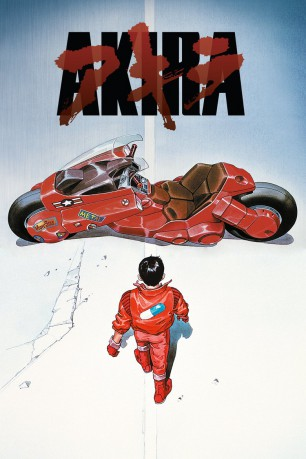

#1110 Akira
 
 IMDB-Wertung: 8.1 / 10
IMDB-Wertung: 8.1 / 10  IMDB-TOP-Platzierung: 245
IMDB-TOP-Platzierung: 245  Metascore: 0
Metascore: 0 
Tokio 1988. In einem Geheimlabor der Armee wird mit Kindern, die über PSI-Fähigkeiten verfügen, experimentiert. Doch die Tests geraten außer Kontrolle, die nur noch mit dem Abwurf einer Atombombe gestoppt werden können. 31 Jahre später. Eine Motorradgang, angeführt von Kaneda, durchstreift Neo-Tokio auf der Suche nach Action. Ungewollt gerät sie an ein Geheimnis, das die gesamte Menschheit bedroht.
Jahr: 1988
Dauer: 124 Minuten
FSK: 16
Land: Japan Studio: Connexion FilmTonspuren: DTS - ,
Untertitel: Englisch,
Auflösung: 1080p (1890x1020) Größe: 8448 MB
Genre: Animation/Trick, Action, Drama, Sci-Fi, Thriller
Regisseur: Katsuhiro Ôtomo
Drehbuch: Katsuhiro Ôtomo, Izô Hashimoto, Katsuhiro Ôtomo
Soundtrack: Shôji Yamashiro
Darsteller:
Datei: X:\HD-Anime\Akira (1988, FSK16, 1890x1020).mkv seit 21.05.2015
Festplatte: Gemischt-01+Anime
 Es gibt insgesamt 43 Filme in der Gruppe 'HD-Anime'
Es gibt insgesamt 43 Filme in der Gruppe 'HD-Anime'